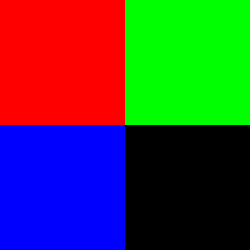

How to build LIME yourself (bLIMEy) – Surrogate Image Explainers¶
How-to Guide Contents
This how-to guide illustrates how to construct a local surrogate model on top of a black-box image classifier and use it to generate explanations of selected predictions of the black-box model.
This how-to guide requires scikit-learn, scikit-image and
Pillow packages as it uses image segmentation, image occlusion
as well as ridge regression and decision tree predictors as local
surrogate models.
Each surrogate explainer is composed of three main building blocks:
interpretable data representation – image segmentation;
data sampling – (random) image segment occlusion; and
explanation generation – surrogate model training.
Choosing a particular algorithm for each of these components shapes the type
of surrogate explanations that can be generated with the final explainer.
(The theoretical considerations of each component for tabular data explainers
can be found in Surrogate Transparency User Guide,
How to build LIME yourself (bLIMEy) – Surrogate Tabular Explainers, [SOKOL2019BLIMEY] and the
Jupyter Notebook distributed with the latter manuscript.)
In this how-to guide we will show how to build the image LIME explainer
[RIBEIRO2016WHY] and a simple tree-based surrogate.
A similar surrogate explainer is already distributed with this package:
fatf.transparency.predictions.surrogate_image_explainers.ImageBlimeyLime.
This classes provides usage convenience – no need to build the explainers from
scratch – in exchange for lack of flexibility – none of the three
aforementioned components can be customised.
Setup¶
First, let us set the random seed to ensure reproducibility of the results:
>>> import fatf
>>> fatf.setup_random_seed(42)
We will also need numpy:
>>> import numpy as np
Next, we create a simple 250x250-pixel data set with two classes.
Class 0 has always red in the top-left quadrant of the image,
with the other three quadrants randomly assigned one of green, blue or
black.
Class 1 follows the same pattern but the bottom-right pixel is always
red.
We build such a data set with 3 instances of each class:
>>> r, g, b, k = [255, 0, 0], [0, 255, 0], [0, 0, 255], [0, 0, 0]
>>> X = np.array(
... [
... [*(125*[125*[r]+125*[g]]), *(125*[125*[b]+125*[k]])],
... [*(125*[125*[r]+125*[b]]), *(125*[125*[g]+125*[k]])],
... [*(125*[125*[r]+125*[k]]), *(125*[125*[b]+125*[g]])],
... [*(125*[125*[k]+125*[g]]), *(125*[125*[b]+125*[r]])],
... [*(125*[125*[k]+125*[b]]), *(125*[125*[g]+125*[r]])],
... [*(125*[125*[g]+125*[k]]), *(125*[125*[b]+125*[r]])],
... ],
... dtype=np.uint8
... )
>>> y = np.array([0, 0, 0, 1, 1, 1])
>>> class_names = {0: 'top-left-red', 1: 'bottom-right-red'}
Now, we need to train a black-box model – k-nearest neighbours predictor with k=1. First, however, we need to adapt it to accept 3-dimensional RGB images. Additionally, we modify it such that it represents each data point (image) as a flat array consisting only of the red channel intensity for each pixel in the image:
>>> import fatf.utils.models.models as fatf_models
>>> class KNNimg(fatf_models.KNN):
... def fit(self, X, y):
... X_r_flat = np.array([
... i[:, :, 0].flatten() for i in X], dtype=np.uint8)
... super().fit(X_r_flat, y)
...
... def predict(self, X):
... X_r_flat = np.array([
... i[:, :, 0].flatten() for i in X], dtype=np.uint8)
... return super().predict(X_r_flat)
...
... def predict_proba(self, X):
... X_r_flat = np.array([
... i[:, :, 0].flatten() for i in X], dtype=np.uint8)
... return super().predict_proba(X_r_flat)
>>> blackbox_model = KNNimg(k=1)
>>> blackbox_model.fit(X, y)
Next, we need to choose a data point for which we will generate an explanation with respect to this model:
>>> data_point = X[0]
>>> data_point.shape
(250, 250, 3)
and visualise it for reference.
Let’s also predict this instance:
>>> data_point_probabilities = blackbox_model.predict_proba(
... np.array([data_point]))[0]
>>> data_point_probabilities
array([1., 0.])
>>> data_point_prediction = data_point_probabilities.argmax(axis=0)
>>> data_point_prediction
0
>>> data_point_class = class_names[data_point_prediction]
>>> data_point_class
'top-left-red'
Interpretable Representation¶
LIME introduces a human-comprehensible interpretable representation of images
– super-pixel segmentation – to create legible explanations.
In this case a LIME explanation communicates the positive or negative influence
of the visual information enclosed by each segment on the black-box
prediction (with respect to the selected class) of the explained image.
The exact steps taken by LIME can be inspected by looking at the documentation
and implementation of the
fatf.transparency.predictions.surrogate_image_explainers.ImageBlimeyLime
class.
To build the interpretable data representation, we segment the selected
data_point using the QuickShift
segmenter:
>>> import fatf.utils.data.segmentation as fatf_segmentation
>>> segmenter = fatf_segmentation.QuickShift(
... data_point,
... ratio=.05,
... kernel_size=20,
... max_dist=400)
We can inspect the number of segments and see whether their number looks reasonable:
>>> np.unique(segmenter.segments)
array([1, 2, 3, 4])
Let’s see how the image is segmented by plotting the super-pixel boundaries in yellow:
>>> segment_boundaries = segmenter.mark_boundaries(colour=(255, 255, 0))
Additionally, let’s see how the segments are numbered:
>>> segment_numbers = segmenter.number_segments(colour=(255, 255, 0))
Given such a nice segmentation, we can name these super-pixels to enable more comprehensive explanations down the line:
>>> feature_names_ir = [
... 'top-left',
... 'top-right',
... 'bottom-right',
... 'bottom-left'
... ]
Data Augmentation¶
In order to assess the influence of each segment on the black-box prediction, we generate a collection of instances with random number of segments occluded according to a user-selected colouring strategy. To this end we represent each image as a binary vector of length equal to the number of segments (i.e., our interpretable components), where:
1 indicates that the segment has its original pixel values; and
0 indicates that the pixel values within the segment have been replaced according to the selected colouring strategy.
This sample is implicitly local as we are restricted to only manipulating the explained image. The original image is represented by an all-1 vector in this binary space:
>>> data_point_ir = np.ones(
... shape=(1, segmenter.segments_number), dtype=np.int8)
>>> data_point_ir
array([[1, 1, 1, 1]], dtype=int8)
and the sample can be generated with:
>>> import fatf.utils.data.instance_augmentation as fatf_augmentation
>>> samples_number = 300
>>> sampled_data = fatf_augmentation.random_binary_sampler(
... segmenter.segments_number, samples_number)
We transform this binary representation back into the image format with an occluder, choosing colouring strategy as random:
>>> import fatf.utils.data.occlusion as fatf_occlusion
>>> occluder = fatf_occlusion.Occlusion(
... data_point, segmenter.segments, colour='randomise')
Let’s see how this looks. As an example, we can occlude segments 2 and 4:
>>> occlusion_example = occluder.occlude_segments([2, 4])
Additionally, we choose the first point from our random sample:
>>> random_instance = sampled_data[0]
>>> random_instance
array([0, 1, 0, 0])
This vector tells us that only the pixels in the second segment will be preserved, with pixels in the remaining segments occluded. Let’s apply the occlusion and visualise this instance:
>>> occlusion_random_instance = occluder.occlude_segments_vectorised(
... random_instance)
Note that the occlusion colour is randomised for each occluded instance, hence the occlusion colours will differ between the two examples shown above.
Before we can fit our surrogate model and explain the selected data point, we need to transform all of the sampled data from the binary into the image representation and predict them with our black box. Since large samples of high-resolution images may be too big for one’s computer memory to load and predict in one pass, we split this procedure into smaller batches:
>>> import fatf.utils.models.processing as fatf_processing
>>> iter_ = fatf_processing.batch_data(
... sampled_data,
... batch_size=50,
... transformation_fn=occluder.occlude_segments_vectorised)
>>> sampled_data_probabilities = []
>>> for batch in iter_:
... sampled_data_probabilities.append(
... blackbox_model.predict_proba(batch))
>>> sampled_data_probabilities = np.vstack(sampled_data_probabilities)
In case of LIME we use the probabilistic output of the black-box classifier as
the local model – ridge regression – is fitted against the probabilities of
a selected class. When using any other model (cf. the decision tree surrogate
section below) it is possible to use class predictions instead.
Using the probabilistic output of the black-box model also entails training the
local model as one-vs-rest for a selected class to be explained. In this case
we will explain the class to which the selected data_point belongs: 0,
i.e., 'top-left-red'.
Explanation Generation – Surrogate Linear Model (LIME)¶
Finally, we fit a local linear (ridge) regression to the sampled binary data
and extract the explanation from its coefficients.
To enforce the locality of the explanation even further – i.e., preference for
smaller changes to the image – we first calculate the cosine distances between
the binary representation of the data_point – data_point_ir – and the
sampled data; then we kernelise these distances (with an exponential kernel) to
get similarity (weights) between the explained instance and the data sample.
We use 0.25 as the kernel width:
>>> import scipy.spatial
>>> import fatf.utils.distances as fatf_distances
>>> import fatf.utils.kernels as fatf_kernels
>>> distances = scipy.spatial.distance.cdist(
... data_point_ir, sampled_data, 'cosine').flatten()
Since some of the sampled data may be all-0 vectors – i.e., all of the segments are occluded – we may end up with undefined distances. We replace them with 1 and proceed:
>>> _all_zero_mask = (sampled_data.sum(axis=1) == 0)
>>> if _all_zero_mask.any():
... assert np.isnan(distances[_all_zero_mask]).all()
... distances[_all_zero_mask] = 1
>>> assert not np.isnan(distances).any()
Having taken care of undefined distances, we transform them into similarity scores:
>>> kernel_width = 0.25
>>> weights = fatf_kernels.exponential_kernel(
... distances, width=kernel_width)
As mentioned before, we will explain the 'top-left-red' class, which is
represented as 0.
Therefore, we extract the probabilities of the first column (with index 0)
from the black-box predictions:
>>> sampled_data_predictions_0 = sampled_data_probabilities[:, 0]
We also generate crisp class predictions for future use:
>>> sampled_data_predictions = sampled_data_probabilities.argmax(axis=1)
Last but not least, we train a local weighted ridge regression:
>>> import sklearn.linear_model
>>> lime = sklearn.linear_model.Ridge()
>>> lime.fit(
... sampled_data,
... sampled_data_predictions_0,
... sample_weight=weights)
Ridge()
and explain the data_point with its coefficients:
>>> print('Explaining class: {} (index {})'.format(
... data_point_class, data_point_prediction))
Explaining class: top-left-red (index 0)
>>> for name, importance in zip(feature_names_ir, lime.coef_):
... print('->{}<-: {}'.format(name, importance))
->top-left<-: 0.6259907147441295
->top-right<-: 0.04165659460325038
->bottom-right<-: -0.32919456182487195
->bottom-left<-: -0.013096092783156627
The explanation agrees with the generation process behind our simple data set.
It informs us that the top-left segment being present for this particular data
point has strong positive influence on predicting class 0, i.e.,
'top-left-red'.
The information in the bottom-right segment, on the other hand, has negative
influence on predicting this class.
We leave explaining the other class as an exercise for the reader.
Explanation Generation – Surrogate Tree¶
A linear regression fitted as one-vs-rest to probabilities of a selected class is not the only surrogate that can give us some insights into the black-box model operations. Next, we train a shallow local decision tree. By limiting the depth of the tree we force it to do interpretable feature selection, i.e., image super-pixels. Lastly, we need to decide whether we want to train the tree as a regressor for probabilities of one of the classes (as in the case of LIME) or use a classification tree; we will go with the latter option. Since our data set has only two classes, we do not need to decide between training the surrogate tree as either a multi-class classifier for all of the classes or as one-vs-rest for a selected class. In any case, the advantage of the former is that the same tree can be used to explain all of the classes at once.
Let’s fit a surrogate classification tree:
>>> import sklearn.tree
>>> blimey_tree = sklearn.tree.DecisionTreeClassifier(max_depth=2)
>>> blimey_tree.fit(
... sampled_data, sampled_data_predictions, sample_weight=weights)
DecisionTreeClassifier(max_depth=2)
One possible explanation that we can extract from the tree is interpretable feature (super-pixel) importance:
>>> for n_i in zip(feature_names_ir, blimey_tree.feature_importances_):
... name, importance = n_i
... print('->{}<-: {}'.format(name, importance))
->top-left<-: 0.5661650764281145
->top-right<-: 0.0
->bottom-right<-: 0.4338349235718855
->bottom-left<-: 0.0
This explanation agrees with LIME but is not as informative as the one derived with LIME. A better explanation is the tree structure itself:
>>> blimey_tree_text = sklearn.tree.export_text(
... blimey_tree, feature_names=feature_names_ir)
>>> print(blimey_tree_text)
|--- top-left <= 0.50
| |--- bottom-right <= 0.50
| | |--- class: 0
| |--- bottom-right > 0.50
| | |--- class: 1
|--- top-left > 0.50
| |--- class: 0
In this explanation segment <= 0.50 indicates the segment being occluded,
and segment > 0.50 represents its pixels being preserved.
Therefore, if we preserve the top-left segment in the explained image,
the black-box is likely to predict it with class 0 – 'top-left-red'.
If it is occluded, however, the prediction depends on the bottom-right
segment;
if the bottom-right segment is occluded, the black-box is likely to predict the
explained image with class 0 ('top-left-red'), however when its pixel
values are preserved the black-box is more likely to classify it as 1,
i.e., 'bottom-right-red'.
Again, the explanation agrees with our simple data generation mechanism.
We leave further exploration to the reader.


{kind=link}
{kind=link}
{kind=link}
{kind=link}
{kind=link}